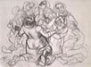
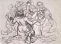

| Introduction |
| The Massacre |
| Northern Fields |
| Inside the Village |
| First Wave |
| Second Wave |
| Third Wave |
| Fourth Wave |
| Sixth |
| Seventh |
| Ninth |
| Roster of Victims |
| Witnesses |
| Artist's Notes |
| Contact me |
| Exit |
MEMORIAL on the 50th Anniversary of the Kafr Qasem Massacre
Notes by the artist
As I listened to witnesses, family members, residents of Kafr Qasem, and read the recorded documents, some unexpected behavior on the part of the victims appeared. In many cases, particularly in the most horrendous events, victims who had escaped returned to the scene only to be killed. It seemed to me that the horror was so great that a new sense of reality, or the absence of its normal logic, took hold of the victims. It must have seemed to the horror stricken survivors that only those who shared it with them could believe them or ever give them comfort or confirmation.
The wounded Masarwa returns, during the course of the ninth wave, cursing the soldiers after they killed all the riders in his truck most of whom were women. The two little girls of the ninth wave who escaped and hid under the truck returned to be with the women when the shooting began. And during the seventh wave of killing, a man who had escaped and had run westwards down the road to the plains returned to seek shelter under the truck with Abu Ayyoub, only to be killed. Many of the wounded had no idea why they were being slaughtered and some believed that entire population of the village had either been killed or been pushed across the nearby border to Jordan.
Abu Naser had told me "You must realize how things were then. In our town all things that connected us to the police or to the military created fear." (See witness statements.)
Everyone noticed that the residents of Kafr Qasem asserted their resistance to the massacre by giving birth copiously for the following decades. But what is seldom mentioned is the heroic Sumoud of the town paid for by mountains of pain despite of the huge difficulties that haunts the town even now, fifty years later. This pain is as deep as the terror is extensive, a terror which is deliberately applied by Israel to Kafr Qasem before and after the massacre. The massacre symbolizes a mountain of suffering that will not begin to fade until freedom, equality, and justice return to Kafr Qasem and Palestine.
The intention behind collecting information and studying the history of this massacre was and is to make a documentary set of drawings, and to encourage other artists to do the same for other parts of Palestine's history.
I told myself that I wanted to pretend to be a camera that was there. I did not want create scenes that were inaccurate, but it was hard not to create scenes where the positions of various individuals was a guess rather than a known fact. Inspite of the difficulties, being factual and documentary remained a goal which is perhaps impossible to fulfill.
For example, there is ample evidence that the males of the ninth wave of killing were lined up at the edge of the road and then shot. Would I show only the men, would I show the soldiers, and where were they all in relation to the truck. Finally, there were fourteen women and girls, what were they all doing at the moment the men were lined up. Undoubtedly, there would be a lot of guessing.
Verbal descriptions lack visual detail. We are left to create a visual scene based on our experiences. But this habit can not be used when trying to be true to a specific time and place in history.
I had decided that Renaissance drawing and chiaroscuro (shading) is the state of the art in the type of documentary drawing that I wanted to do. I was challenged in this persuasion and told that the cubism of Diego Rivera was the state of the art for documentary drawing. This was persuasive, and I thought hard about the Mexican Muralists and the work of Diego Rivera whom I admired. Still yet, a Renaissance style is more appropriate to the documentary coolness I sought. The power of great events captured in cool rendition can explode in the feelings of the willing viewer and provide them with a strong experience of empathy. I do not want to co-opt the emotional experience of the viewer, even if the cost is telling myself that these drawing need not be considered art.
I gave serious consideration about how to handle the image of the Isaeli killers in my drawings. I explored different ways, sometimes showing them as skeletons or just flat shadows. I tried some representation based on seeing soldiers and armed settlers among the Palestinian population. Memories of Israelis sharpshooters aiming at Palestinian civilian from elevated locations and towers affected some explorations. Once, in Gaza where there was no elevated location, I saw a gondola full of soldiers hanging from a monumentally high pole standing at a slight angle dangling sharpshooters high in the air -- a surreal nightmare. Imitating it, I drew the soldiers like spiders hanging from thread and replaced their mindless heads with guns. Later I decided not to show them at all. The story is not about them.
Finally, I agonized about when in the process of the forced ending of life would I represent the victims. Mountains of unnaturally bent bodies, blood, wounds, and other horrors did not suite the solemnness I felt was appropriate. I wanted the victims seen at the last moment before death, when they were still full of life, hoping for escape. I searched for the heroic moments, for moments of humanity, consciousness, and dignity. After all, Kafr Qasemites have a proud history of resistance during the 1948 war under the leadership of Abdal Karim Qasem of Iraq. It is precisely this last decision that gives the drawing meaning to viewers who care more when they meet a live, feeling person rather than a body.
Web posting and authoer: Samia A. Halaby, October 2006.
![[Art on the Net]](/images/artnet_button.gif)